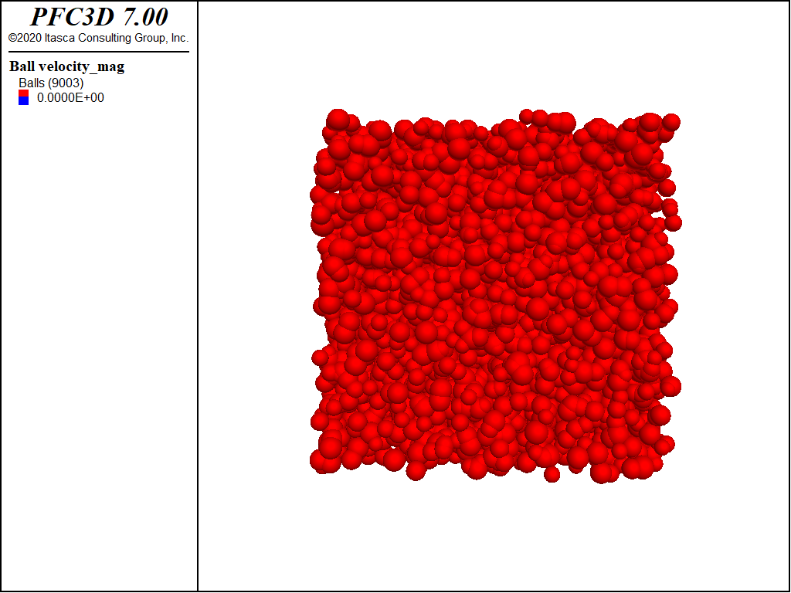
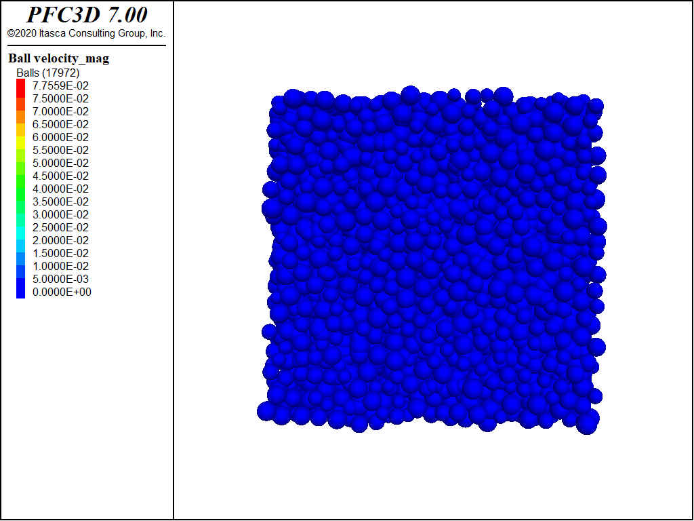
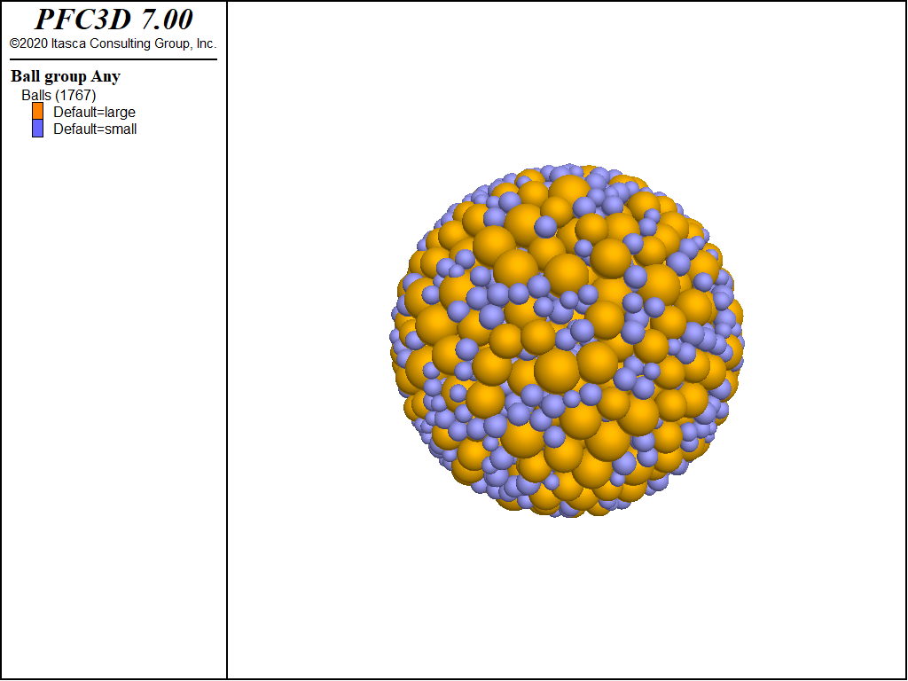

ball distribute 命令
语法
- ball distribute keyword ... <range>
-
分布相互重叠的球颗粒。 当达到目标孔隙率（未计入重叠）时，此过程终止。 默认情况下，球颗粒的位置和半径在整个模型域内按均匀分布抽取。 因此，所生成的球颗粒集合受随机数生成器状态的影响（参见 设置随机数种子命令（
model random））。 球颗粒半径也可通过 gauss 关键字按高斯分布抽取。 可以指定多个球颗粒分布，并给出各自的半径范围和体积分数。 可选的范围在生成时施加于每个球颗粒，以确保最终分布 满足目标条件。 此命令与ball generate命令形成对比：在后者中，球颗粒的半径 从单一分布中选取，且在不发生重叠的情况下生成，直到 1) 达到目标球颗粒 数量，或 2) 放置球颗粒的尝试次数满足既定条件。注意
- 在生成球颗粒之前必须指定模型域。
- 此操作很可能会导致球颗粒出现显著重叠。
- 在循环计算过程中，只能在循环点 0 之前（即在计算时步时）创建球颗粒。
- bin i keyword ...
指定分箱 i 的分布属性。可以指定任意数量的分布， 并给出各自的半径范围、体积分数和分布类型。所有分布的 体积分数之和必须等于 1。
- fish-distribution s a1...an
球颗粒半径从 FISH 函数 s 所表示的分布中抽取。函数参数可按 指定，但不需要任何函数 参数。FISH 函数必须返回一个浮点数值，即球颗粒 半径。不能使用 gauss 或 radius 关键字指定 FISH 分布。
- gauss <f >
指定球颗粒半径从高斯分布中选取，其均值为 (最小半径系数（fradlow） + 最大半径系数（fradhi）)/2，标准差为 (最大半径系数（fradhi） - 最小半径系数（fradlow）)/2。可选的 f（默认值 0.1） 与 最小半径系数（fradlow） 相乘，构成允许的最小半径。
- group s <slot slot > ...
指定将生成的球颗粒赋予分组名 s，位于槽位 槽位（slot）。 若未指定 slot 关键字，则分组名被赋予 槽位 默认（Default）。
- radius 最小半径系数（fradlow ）<fradhi >
指定生成过程中使用的半径范围。若未指定 最大半径系数（fradhi）， 则 最大半径系数（fradhi） = 最小半径系数（fradlow）。默认情况下 最大半径系数（fradhi） = 最小半径系数（fradlow） = 1.0。不能与 fish-distribution 关键字一起给出。
- volume-fraction f
该分布中球颗粒的体积分数。所有分布的体积分数之和 必须为 1。
- box x 向最小值（fxmin ）x 向最大值（fxmax ）<fymin fymax <fzmin fzmax >> （*z* 分量 仅 3D 独有）
球颗粒将完全落在该盒体内，因此不会与盒体的面或 棱边重叠。若省略 y,z 向边界，则将其视为与 x 向边界相同。 若省略 z 向边界，则将其视为与 y 向边界相同。默认情况下， 盒体即为模型域。
- number-bins i
用于生成集合体的分布数量。
用法示例
ball distribute 命令是可用于创建球颗粒的三个命令之一。其他可选命令
为 ball generate 和 ball create。如上文命令说明所述，ball distribute 将在给定范围内分布
球颗粒以达到目标孔隙率，但在此过程中不会检查球颗粒是否重叠。
简单示例
以下代码在整个域范围内分布半径从 1.0 到 1.6 的球颗粒，
目标孔隙率为 0.36。系统如图 1 所示。请注意，由于
ball distribute 命令在布置球颗粒时不检查重叠，因此在此阶段模型中存在大量重叠。
; 设置模型域与 CMAT
model domain extent -25.0 25.0 condition periodic
contact cmat default model linear method deformability emod 1e6 ...
kratio 1.25 property fric 0.25
; 生成球
ball distribute radius 1.0 1.6 porosity 0.30


图 1：执行 ball distribute 命令后的试样。请注意，球颗粒之间存在
大量重叠。
命令执行后，可通过让球颗粒重新排列来减小重叠。下面的代码
将通过求解系统至默认目标准则来执行此操作。请注意，执行计算时步（model cycle） 命令
最初会连同 calm 关键字一起发出，以高效地从系统中移除能量。最终
系统如图 2 所示。
model large-strain on
ball attribute density 1000.0 damp 0.7
model cycle 1000 calm 100
model solve

值得注意的是，ball distribute 命令是自包含的，这意味着其执行结果
不考虑模型中可能已经存在的任何球颗粒。例如，
若使用以下代码行再执行一次该命令，则最终状态将同时包含先前创建的球颗粒
和新创建的球颗粒，如图 3 所示。
ball distribute radius 1.0 1.6 porosity 0.30


图 3：再次执行 ball distribute 命令后的系统。请注意，尽管试样的目标孔隙率已经满足，
但仍创建了球颗粒。该命令是自包含的，
不会考虑模型中已存在的球颗粒。
双峰粒径分布
以下示例生成由 25% 小球颗粒
（半径范围为
0.2 至 0.32）和 75% 大球颗粒（半径范围为 0.4 至 0.6）组成的双峰球颗粒集合体。请注意
分辨率（resolution） 关键字的使用，其值为 0.2，用于
乘以指定的半径。球颗粒在球形范围内生成
（通过几何对象获得，该几何对象还用于创建相应的墙），
目标孔隙率为 0.36。
指定了密度和局部阻尼属性，并使用时步
缩放求解系统（参见 模型力学时步（model mechanical timestep） 命令）。
最终分布如图 4 所示。
model new
model large-strain on
; 定义域范围和 CMAT 的默认槽位
model domain extent -10 10
contact cmat default model linear method deformability emod 1e6 ...
kratio 1.25 property fric 0.25
; 生成球面几何体并将其导入为墙
geometry set 'sphere'
geometry generate sphere radius 5.0
wall import from-geometry 'sphere'
; 使用 ball distribute 命令创建双峰级配集合体
; 使用球面几何体作为过滤范围
ball distribute porosity 0.36 ...
resolution 0.2 ...
number-bins 2 ...
bin 1 ...
radius 1.0 1.6 ...
volume-fraction 0.25 ...
group 'small' ...
bin 2 ...
radius 2.0 3.0 ...
volume-fraction 0.75 ...
group 'large' ...
range geometry-space 'sphere' count 1
; 设置球密度和局部阻尼系数
; 并求解系统
ball attribute density 1000.0 damp 0.7
model cycle 1000 calm 100
ball delete range geometry-space 'sphere' count 1 not
model mechanical timestep scale
model solve ratio-average 1e-3


图 4：最终的双峰集合体（球颗粒按分组名称着色）。
可以指定任意数量的粒径区间，以匹配实验测得的真实粒径分布。教程示例“复现粒径分布（Replicating a Particle Size Distribution）”说明了如何实现这一点。
| 这些内容对您有帮助吗？… | FLAC3D © 2019, Itasca | 原文更新于 2020 年 10 月 8 日 |
| 版权与免责声明 | ||